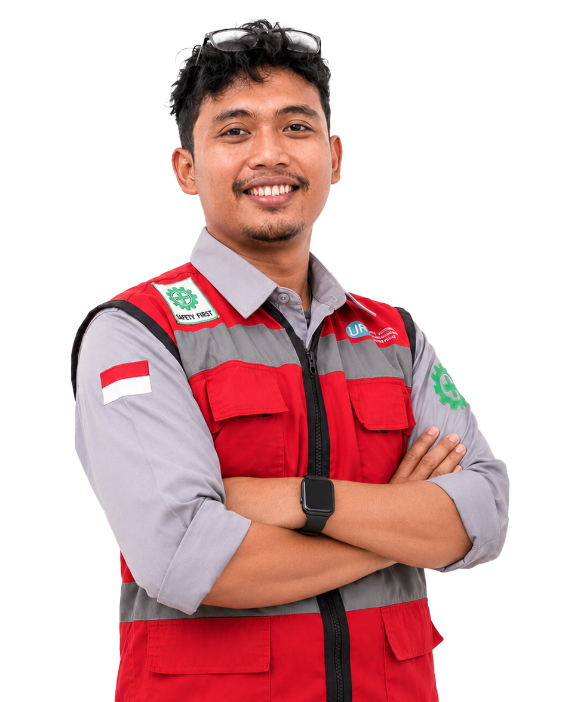
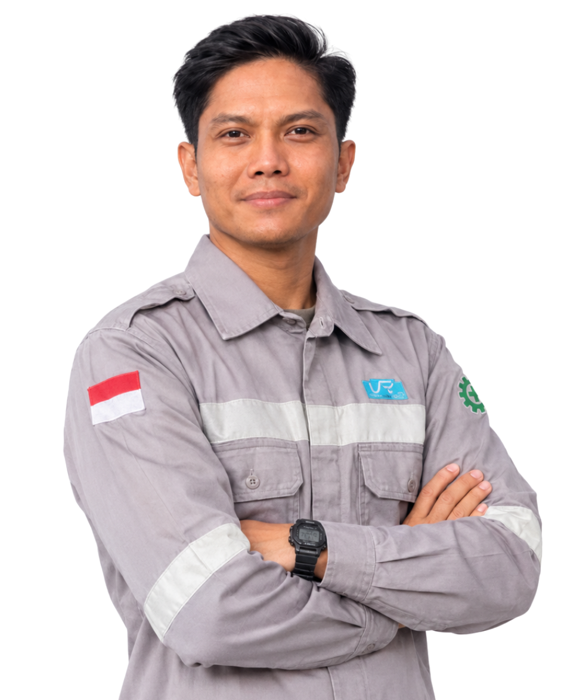

Tentang Kami
HSE Department bertanggung jawab atas tiga hal: kesehatan kerja, keselamatan kerja, dan pengelolaan lingkungan. Kami hadir di setiap area operasional, dari perencanaan pekerjaan sampai penutupan lokasi.
Kami bekerja bersama seluruh departemen untuk mengenali bahaya lebih awal, memastikan pekerja memiliki kompetensi dan perlengkapan yang tepat, serta menjaga kepatuhan terhadap peraturan yang berlaku.
Visi & Misi
Visi
Menjadi departemen HSE yang memastikan setiap pekerja pulang dengan selamat dan setiap area kerja tetap terjaga kelestariannya.
Misi
- Menerapkan sistem manajemen K3 dan lingkungan secara konsisten di seluruh area kerja.
- Mengenali bahaya dan mengendalikan risiko sebelum berubah menjadi kecelakaan.
- Meningkatkan kompetensi dan kesadaran HSE seluruh pekerja melalui pelatihan.
- Memastikan kepatuhan terhadap peraturan perundang-undangan dan standar yang berlaku.
- Menjaga kesehatan pekerja dan kelestarian lingkungan di sekitar area operasi.
Nilai Kerja
Tidak ada pekerjaan yang lebih penting daripada keselamatan orang yang mengerjakannya.
Kesehatan pekerja dijaga lewat pemeriksaan berkala dan lingkungan kerja yang layak.
Setiap kegiatan dikelola agar dampaknya pada alam sekecil mungkin.
Prosedur dijalankan sesuai aturan, dan setiap temuan dilaporkan apa adanya.
Struktur Organisasi


Perjalanan
- Departemen HSE dibentuk
Fungsi K3 dan lingkungan disatukan dalam satu departemen.
- Program safety talk rutin
Safety talk harian dan mingguan mulai dijalankan di seluruh area kerja.
- Pelaporan hazard dan near miss
Pekerja dapat melaporkan temuan bahaya secara terbuka dan terdokumentasi.
- Simulasi tanggap darurat berkala
Simulasi evakuasi dan penanganan darurat dilakukan terjadwal.
- Peningkatan kompetensi
Pelatihan dasar seperti first aid diperluas untuk seluruh pekerja.